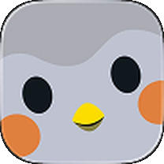
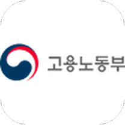
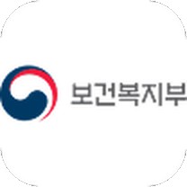
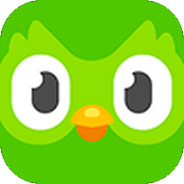
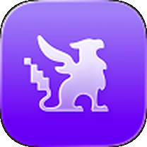
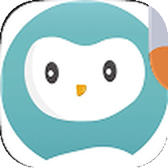
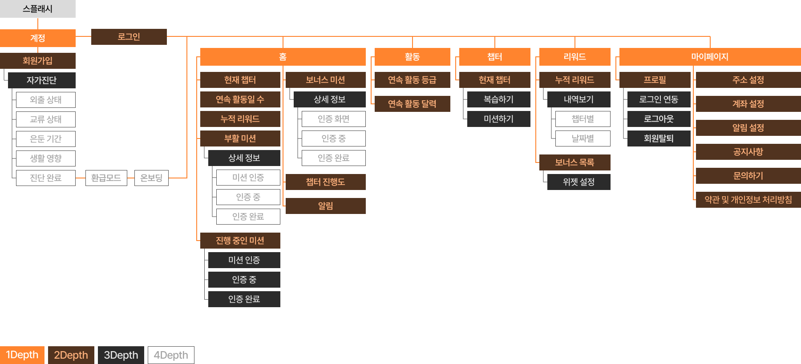

쉬었음 청년 규모는 늘어나고 있습니다.
국가 데이터처_경제활동인구조사, 한국경영자총협회 재분석
02 프로젝트 배경자료 조사
국가 데이터처_경제활동인구조사, 한국경영자총협회 재분석
청년 5명 중 1명은
‘쉬었음’을 경험했습니다
취업·재학 청년은 낮 시간대에 생산활동 비율이 높아지는 반면, 쉬었음 청년은 생산활동 비율의 정점이 2019년 26%에서 2024년 31%에 그쳤습니다. 반면 미디어·여가 활동은 하루 전반에 걸쳐 높게 나타나며, 낮 시간대를 중심으로 한 일상의 구조가 상대적으로 약한 모습을 보였습니다.
한국직업능력연구원 “쉬는 청년의 하루, 혼자 보내는 시간 282분→372분…‘관계 빈곤’ 신호”
20~29세 쉬었음 청년이 혼자 보낸 시간은
2019년 282분 → 2024년 372분으로 증가했습니다.
이는 쉬었음 청년의 어려움이
단순히 일자리 부족에 그치는 것이 아니라, 하루를 구조화하는 생활 리듬과 타인과의 관계가 함께 약화될 가능성을 보여줍니다.
한국직업능력연구원 “쉬는 청년의 하루, 혼자 보내는 시간 282분→372분…‘관계 빈곤’ 신호”
02 프로젝트 배경은둔/고립형 청년의 일상회복단계 필요성
정부는 쉬었음 청년을 유형별로 구분하고,
구직의욕이 낮은 청년에게 구직동기 회복·심리적 장벽 해소,
고립·은둔 등 취약청년에게
사회활동 장애요인 해소를
취업·노동시장 진입에 앞선 지원 영역으로 제시했습니다.
관계부처 합동, 「청년층 노동시장 유입 촉진방안」, 2023.11.15.
• (노동경험 및 구직 계획 기반)
| 유형 | 특성 | 주요 고려 사항 |
|---|---|---|
| 취준 - 적극형 | 직장 경험 無, 구직 계획 有 | 직무 탐색 및 역량 강화 지원 (단기적 개입) |
| 취준 - 소극형 | 직장 경험 無, 구직 계획 無 | 구직 동기 부여 및 심리적 장벽 해소 선행 |
| 이직 - 적극형 | 직장 경험 有, 구직 계획 有 | 경력 전환 및 재취업 코칭 (맞춤형 연계) |
| 이직 - 소극형 | 직장 경험 有, 구직 계획 無 | 경력 활용을 위한 동기 회복 및 심리 지원 |
| 취약형 | 사회참여 회피형, 장애/질환, 가족 돌봄 책임 등 기타 유형 |
심리·관계 회복 (Recovery) 단계 선행이 필수적 |
한중문화원 2025 현안연구 인천시 ‘쉬었음 청년’의 노동시장 진입 지원 정책 마련 연구 민규량 / 2026 02. 03
02 프로젝트 배경정부의 지원 프로그램 현황
정부지원 프로그램의 단계를 확인해 봤습니다
| 청년성장프로젝트 | 청년도전지원사업 | 일자리 첫걸음 보장센터 | 청년미래센터 |
|---|---|---|---|
| 취업준비·고용연계 | 일경험·취업연계 | 맞춤형 취업지원 | 일경험·외부서비스 연계 |
| 진로·경력 설계 | 진로탐색·취업준비 | 진로탐색 | 관계·사회성 회복 |
| 심리·교류 지원 | 자신감·구직의욕 회복 | 구직의욕·자신감 회복 | 일상회복 |
| 청년카페·초기상담 | 밀착상담·상태파악 | 미취업 청년을 선제적으로 발굴·접촉 | 자가진단·초기상담 |
고용노동부 「청년성장프로젝트」 카드뉴스 / 고용노동부 「청년도전지원사업」 정책안내 및 보도자료
고용노동부 「일자리 첫걸음 보장센터」 정책안내
/ 보건복지부 「청년미래센터에서 가족돌봄, 고립·은둔청년 전담지원 서비스를 시작합니다」
03 사용자 분석자료조사
하지만 고립·은둔 청년에게는,
초기지원 단계부터 장벽이 존재했습니다
외부 활동이 적기 때문에 온라인을 통해 외부 정보를 인지한다는 응답
보건복지부·한국보건사회연구원, 『고립·은둔 청년 실태조사 연구』, 2023, 용역보고서 2023-124.
고용노동센터나 일자리센터는 자신감이 없어서 못 갔어요
벗어날 수 있는 환경이어도 너무 지쳐서 아무 것도 안하는 중 입니다
밖에 나가는게 힘든데, 넌 하루종일 집에 있냐는 가족의 말을 듣는 것도 힘들어요
편의점에 가야할 때도 항상 모자와 마스크를 쓰고 다니죠
휴대폰에 걸려오는 전화가 무섭고 내가 타인에게 전화거는 것조차 무섭습니다
보건복지부, 「고립·은둔 청년, 이제 국가가 돕겠습니다」, 2023.12.13.(심층조사결과)
고립·은둔 청년은 현재 상태에서 벗어나길 원하며,
취업 이전의 일상 회복도 필요로 합니다
현재 고립 / 은둔 상태에서 벗어나길 원한다고 응답
보건복지부·한국보건사회연구원, 『고립·은둔 청년 실태조사 연구』, 2023, 용역보고서 2023-124.
• Q. 탈고립 / 은둔을 위해 필요한 도움 (복수응답)
[NABO Focus 제85호] 고립·은둔 청년 지원사업 현황과 고려사항
고립·은둔 청년은 변화 의지가 있지만, 기존 지원이 요구하는 ‘대면 접촉’과 ‘구직’ 이전에
혼자서 시작할 수 있는 작은 행동의 경로가 없어 첫걸음을 떼지 못하고 있습니다.
03 사용자 분석자료조사
행동활성화 원리를 통해, 동기를 기다리기보다 작은 행동부터 시작해 점진적으로 행동 범위를 확장합니다.
어떻게 하면 사람을 만나지 않고도 오늘 할 수 있는 가장 작은 행동부터 시작해, 실제 사회복귀까지 이어가도록 도울 수 있을까?
낮은 동기와 활동 감소는
행동을 더 어렵게 만드는 악순환으로 이어질 수 있습니다.
행동활성화는 ‘동기가 생기면 행동한다’가 아니라
‘먼저 행동하고, 변화가 뒤따르게 한다’는 원리를 활용합니다.
WHO, Problem Management Plus (PM+), 2018, p.57
행동의 시작이 어렵다면
목표를 성공할 수 있을 만큼 작게 나눕니다.
작은 행동의 성공 경험을 만들고,
가능한 범위부터 점진적으로 행동을 확장합니다.
WHO, Problem Management Plus (PM+), 2018, p.57, 61
03 사용자 분석사용자 그룹핑
| 논문 유형 | 주요 특성 | 서비스 기준 |
|---|---|---|
| 3X(동거방 안 고립) + 2Y(독거·교류 거의 없음) | 동거 여부와 관계없이 타인과의 교류가 거의 끊긴 상태 | 일상 붕괴형 A |
| 2X(동거·집 안 고립) + 1Y(독거·일부 교류) | 집 밖 활동은 제한적이지만 타인과의 교류는 일부 남아 있는 상태 | 외출 장벽형 B |
Hikikomori: Multidimensional understanding, assessment, and future international perspectives
03 사용자 분석사용자 그룹핑
A,B유형을 다룬 논문을 토대로 구분을 위한 질문을 구체화하였습니다
최근 4주 동안 1시간 이상 외출한 날은 일주일에 며칠인가요?
최근 4주 동안 가족·친구·지인과 안부나 일상을 서로 대화한 날은 일주일에 며칠인가요?
이러한 상태가 얼마나 이어졌나요?
이 상태 때문에 일상생활·학업·일·관계에 뚜렷한 지장이 있거나 상당한 괴로움을 겪고 있나요?
03 사용자 분석페르소나 / 저니맵
“해야 하는 건 아는데, 오늘 뭘 해야 할지 모르겠어요.
며칠 해보다가 또 그만두게 되고요.”
“집에서는 괜찮지만 막상 밖에 나가려면
부담돼서 계속 미루게 돼요.”
“해야 하는 건 아는데, 오늘 뭘 해야 할지 모르겠어요.
며칠 해보다가 또 그만두게 되고요.”
“집에서는 괜찮지만 막상 밖에 나가려면
부담돼서 계속 미루게 돼요.”
04 환경 분석 및 전략3C 분석
‘첫 행동’과 ‘사회활동’ 진입이 어려운 쉬었음 청년이
부담 없이 앱 내 행동 활성화 미션을 실천하며,
지속적인 참여로 사회 복귀를 준비하도록 돕는다.
19~34세 쉬었음 청년 및 고립·은둔 청년
청년 지원기관 실무자

반려새를 성장시키며 작은
자기돌봄 습관을 형성하는 셀프케어 앱
작은 행동을 반복해
정신건강과 생활 습관을 개선
일일 미션, 스트릭, 감정체크, 가상 캐릭터 성장
일반 셀프케어 사용자

구직단념 쉬었음 청년 대상
맞춤형 취업 지원 프로그램
자신감회복, 진로탐색,
노동시장 재진입 지원
밀착 상담, 사례관리, 진로설계, 일경험 연계
18~34세 구직단념/쉬었음 청년

고립·은둔 청년 대상
원스톱 상담·회복 지원
일상 회복과
사회관계 회복 지원
자가진단, 심리상담, 자조모임, 공동생활 프로그램
고립·은둔 청년
행동활성화 기반 단계별 미션을 통해 쉬었음/은둔 청년의 자기효능감을 회복하고,
일상→사회활동→취업 준비까지 자연스럽게 연결하는 사회복귀 플랫폼
WHO 행동활성화(PM+) 기반 미션 엔진
인앱 카메라 사진 인증
XP/레벨/스트릭 게임화 시스템
단계별 행동 사다리(Behavior Ladder)
취업 정보 제공이 아닌 취업을 시작할 수 있는 상태를 만드는 서비스
사진 인증 기반 실제 행동 유도
단계별 사회복귀 프로토콜 적용
검증된 행동변화 이론(WHO PM+, HiDE-S)을 기반으로
신뢰성을 확보하고, 게임화 요소로 높은 지속 사용성을 유도하며,
청년센터/청년도전지원사업 등 공공 지원체계와
연계하여 사회복귀부터 취업까지 연결
04 환경 분석 및 전략예산 · SWOT · 벤치마킹 · 포지셔닝
청년 지원 예산은 716억에서 903억으로 늘지만, 지원은 대면 접촉부터 시작합니다.
그 예산이 닿도록, 대상 청년 약 14.5만 명의 ‘혼자 시작하는 첫
행동’ 단계에 예산을 배정해 주세요.
“휴대폰에 걸려오는 전화가 무섭고
내가 타인에게 전화거는 것조차 무섭습니다”
“편의점에 가야할 때도 항상 모자와 마스크를 쓰고 다니죠”
“고용노동센터나 일자리센터는
자신감이 없어서 못 갔어요”
출처: 보건복지부 「고립·은둔 청년, 이제 국가가 돕겠습니다」 2023.12.13.(심층조사결과)
혼자 할 수 있는 작은 미션부터 시작
숨고르기 → 둘러보기 → 마주하기 → 도전하기
준비된 만큼 정부 지원 프로그램으로 연결
고용노동부 청년 지원 예산 (2027)
2025년 716억 → 2026년 758억
→ 2027년 903억으로 확대
“ 그러나 지원은 상담/대면 접촉과 구직 중심”
출처: 고용노동부 「2026년 고용노동부 청년고용 관련 예산안」, 「청년의 도전/성장을 고용노동부가 지원하겠습니다」 / 프로젝트 배경 – 정부 지원 프로그램 현황, 사용자 분석 – 설문 조사/인터뷰 분석
구직단념청년의 노동시장 재진입 지원
상담·자신감 회복·진로탐색 프로그램 제공
단계별 프로그램 이후 취업 및 노동시장 참여 연계
고립·은둔 청년의 일상·관계 회복 지원
초기상담을 통해 개인별 고립·은둔 상태 파악
일상 회복·관계 형성부터 사회복귀까지 맞춤 지원

단계별 언어 학습
짧고 쉬운 학습 단위를 매일 반복하도록 설계
XP·스트릭·리그 등 즉각적 보상으로 지속 참여 유도
위젯 보상을 통한 접근성 강화
게임화 기반 셀프케어·습관 관리 앱
작고 부담 없는 자기관리 목표를 매일 수행
미션 완료와 함께 캐릭터를 성장시키며 성취감 제공

RPG 기반 습관·할 일 관리 앱
일상의 할 일을 퀘스트로 전환하여 행동 수행 유도
XP·레벨·아이템·파티 시스템으로 반복 참여 강화
대입 전문 교육기업
지정된 환급 대상 대학 합격이나 학습 미션 충족 시
결제 금액을 돌려주는 장학금 제도

상담, 면담부터 요구하지 않고,
앱에서 지금 혼자 할 수 있는 행동부터 시작합니다.
단순 루틴 관리가 아닌, 일상 회복에서
실제 사회참여 준비까지 단계적으로 확장합니다.
04 환경 분석 및 전략예산 확보 방안
고용노동부 「2026년 고용노동부 청년고용 관련 예산안」
고용노동부 「청년의 도전·성장을 고용노동부가 지원하겠습니다」
• 5개년 기업 평균 사회공헌 규모
한국경제인협회 「2025 주요 기업의 사회적 가치 보고서」
05 서비스 상세 설계핵심 기능
현재 할 수 있는 행동부터 하루 하나씩
초기 상태 진단 · 단계 설정 · 환급모드
작은 성공을 반복하며 행동 범위 확장
일일회복미션 · 행동 인증 · 예행연습
· 난이도 자동 하향 · 미션 시 리워드 지급
지금 사회와 다시 연결될 준비가 되었는지 확인
행동 수준 재진단
앱 속 회복을 실제 사회참여로
지원 프로그램 안내 · 참여 미션
· 참여 완료 인증
참여 완료 보상 (누적 리워드 ×2)
05 서비스 상세 설계정보 구조 설계

05 서비스 상세 설계기대 효과 및 성과 측정 지표
숫자 목표 대신, 지표마다 무엇으로 확인하는지를 정했습니다
단기 · 앱 안의 행동 변화
받은 미션 대비 인증 완료
앱 로그미션 1개 = 7일 연속 수행 기준
앱 로그연속 끊김 → 부활 미션 → 복귀 여부
앱 로그중기 · 일상과 외출의 회복
챕터별 완료 기록으로 확인
앱 로그첫 자가진단 vs 재진단 응답 비교
진단 비교시작 시 vs 챕터 종료 시 설문
설문장기 · 실제 사회참여로의 연결
안내 노출 대비 신청 이동
앱 + 기관참여 완료 인증 기록
기관 연계총 리워드 ÷ 참여 완료 건수
리워드 정산핵심 플로우 사용성 점검 (자가진단 → 미션 → 인증 → 리워드)
지원기관과 협력해 위 지표를 함께 확인